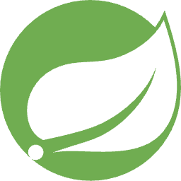

⚙️ Tech Stack
-

- 
-

지역 농산물 직거래 마켓의 주문 및 배송 관리 API 서버를 개발했습니다. Spring Boot 기반의 RESTful API를 통해 생산자별 상품 등록, 소비자 주문 접수, 배송 추적 기능을 구현하고, 데이터는 MySQL로 관리합니다.
AI 기반 스터디 그룹 매칭 플랫폼의 백엔드 시스템을 구축했습니다. 실시간 채팅으로 학습 내용을 공유하고 진행 상황을 관리하는 기능을 구현하고, 안전한 서비스를 위한 인증 및 권한 관리 로직을 설계했습니다. 생성형 AI를 활용해 관련 과목의 예상 문제나 토론 주제를 자동으로 생성하는 기능을 구현했습니다.
트래픽 급증에 유연하게 대응할 수 있는 확장성 높은 인프라를 AWS에 구축했습니다. Application Load Balancer와 Auto Scaling Group을 사용하여 트래픽 양에 따라 EC2 인스턴스가 자동으로 확장 및 축소되도록 구성했습니다. 또한 RDS는 다중 AZ로 구성하여 데이터베이스의 가용성을 높였습니다.